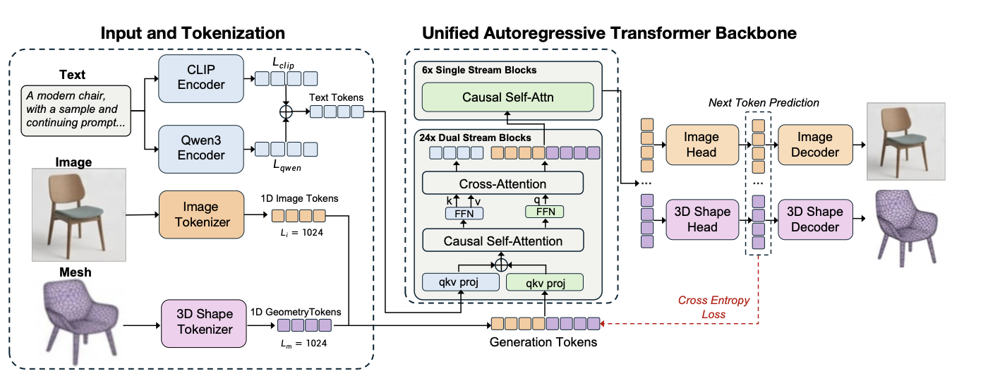

Omni123
Exploring 3D Native Foundation Models with Limited 3D Data by
Unifying Text to 2D and 3D Generation
Technical Report
Abstract
Recent multimodal large language models have achieved strong performance in unified text and image
understanding and generation, yet extending such native capability to 3D remains challenging due to limited
data. Compared to abundant 2D imagery, high-quality 3D assets are scarce, making 3D synthesis
under-constrained. Existing methods often rely on indirect pipelines that edit in 2D and lift results into
3D via optimization, sacrificing geometric consistency. We present
Omni123, a 3D-native foundation model that unifies text-to-2D and text-to-3D generation within a
single autoregressive framework. Our key insight is that cross-modal consistency between images and 3D can
serve as an implicit structural constraint. By representing text, images, and 3D as discrete tokens in a
shared sequence space, the model leverages abundant 2D data as a geometric prior to improve 3D
representations. We introduce an interleaved X-to-X training paradigm that coordinates diverse
cross-modal tasks over heterogeneous paired datasets without requiring fully aligned text-image-3D triplets.
By traversing semantic-visual-geometric cycles (e.g., text → image → 3D → image) within autoregressive
sequences, the model jointly enforces semantic alignment, appearance fidelity, and multi-view geometric
consistency. Experiments show that Omni123 significantly improves text-guided 3D generation and editing,
demonstrating a scalable path toward multimodal 3D world models.
Method

Results
Speed
Text-to-3D
Speed
3D Editing